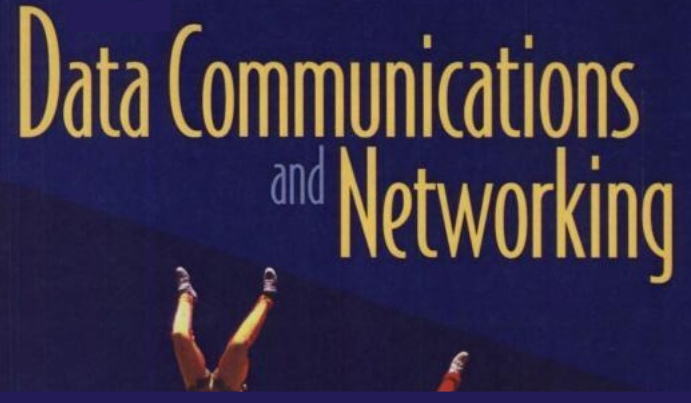
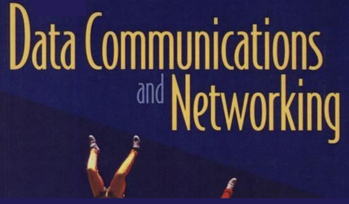

|
Co-chair of the Special Session on Healthcare Analytics and Language Processing (HeAL) program committee at the 8th International Conference on Frontiers of Intelligent Computing: Theory and Applications (FICTA), January 04 – 05 2020. |
Keynote on Applications of High Performance Computing in Big Data Analytics: A Journey to Exascale Computing at the one week national workshop on High Performance Computing and Applications (HPCA), August 12 – 17, 2019, National Institute of Technology Karnataka. |
Keynote on Building Predictive Applications Using Social Media Footprints: Opportunities and Pitfalls at the workshop on Predictive Analytics and Applications (PAA), January 14 – 18 2019, National Institute of Technology Karnataka. |
|
|
Project mentor for Prediction of Suicidal Intentions by Exploring and Mining the Social Web, at the Institution of Engineers Club (January – April 2019), National Institute of Technology Karnataka. |
Teaching Assistant for Socket Programming, Computer Communications and Networking (IT251) at the Department of Information Technology (January – April 2017), National Institute of Technology Karnataka.  |
Interesting discussions and learnings from the mentorship on Machine Intelligence: Unreasonable Effectiveness of Learning Algorithms at the Winter Mentorship Programme (January – April 2016), Web Enthusiasts' Club, National Institute of Technology Karnataka. |